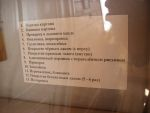
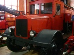
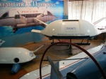
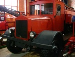
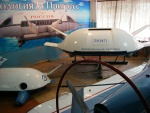

Страницы авторов "Тёмного леса"
Пишите нам! temnyjles@narod.ru
Федоскино - село в Мытищинском районе Московской области на обоих берегах реки Учи в 20км от МКАТ. Федоскино связано автобусным сообщением с железнодорожной станцией Катуар Савёловской ж.д. Население около 200 человек.
В Федоскине находится "Федоскинская " фабрика миниатюрной живописи", специализирующаяся на знаменитом старинном Федоскинском промысле лаковой миниатюрной живописи, основанном в 1795 году.
Федоскинская миниатюра - вид традиционной русской лаковой миниатюрной живописи масляными красками на папье-маше.
Московский областной музей народных художественных промыслов расположен в доме-усадьбе купцов Лукутиных (ул.Лукутинская, 66 ), где работала фабрика лаковых изделий купцов Коробовых-Лукутиных, а после её закрытия в начале XXв. - трудовая артель живописцев. В собрании музея - самая полная коллекция федоскинской лаковой миниатюры, а также произведения промыслов "Гжель", "Дулево", "Вербилки", "Богородское", "Павловопосадская мануфактура", "Сергиевопосадская игрушка", "Жостово". Дом купцов Лукутиных построен в конце XIXв. - деревянное рубленое двухэтажное здание с одноэтажной пристройкой, декорированное пропильной резьбой в стиле "русского модерна".
В непосредственной близости от Федоскина расположена одна из красивейших усадеб Подмосковья Марфино. Сохранился усадебный дворец в стиле псевдоготики (архитектор М.Д.Быковский, 1830-е гг.), мост через пруд, два храма, беседка и ряд других построек.
Московский областной музей народных художественных промыслов (на сайте museum.ru)

Фотографии сделаны 27 марта 2016г. и 21 января 2017г.
Музей великого ученого химика Дмитрия Ивановича Менделеева (1834-1907) в Боблове находится в Солнечногорском районе Московской области. Усадьба расположена на живописном холме, относящемся к Клинско-Дмитровской гряде. Д.И.Менделеев приобрел это имение в 1865г., а позднее, в 1874г. по его совету соседнюю усадьбу Шахматово купил А.Н.Бекетов, профессор ботаники, ректор С.-Петербургского Университета. Через много лет, в 1903г. дочь Менделеева Любовь Дмитриевна и внук Бекетова Александр Блок соединили свои судьбы. Таким образом, эти места связаны с жизнью и творчеством двух великих людей России - ученого Д.И.Менделеева и поэта А.А.Блока. С 2012г. обе усадьбы входят в состав Государственного мемориального музея-заповедника Д.И.Менделеева и А.А.Блока.
Красота здешних мест удивительно притягательна и в настоящее время. Однако покупка Боблова была связана не только с желанием Менделеева иметь место для отдыха, но и имела целью создать образцовое хозяйство, повысить урожайность сельскохозяйственных культур за счет применения удобрений и вообще поставить сельское хозяйство на научную основу. Позже Менделеев писал в "Заветных мыслях": "В 5-6 лет мне удалось удвоить всю урожайность земли..." На менделеевских опытных полях проходили летнюю практику студенты Петровской (ныне Тимирязевской) сельскохозяйственной академии.
Широта научных интересов Дмитрия Ивановича поражает. Материалы на стендах музея знакомят с его успехами в различных областях химии, физики, нефтепереработки, метрологии. Главное же достижение, принесшее ему мировую славу, было открытие в 1869г. фундаментального периодического закона химических элементов и составление таблицы "Периодическая система элементов", большую копию которой мы видим в одном из залов музея.
В Боблове Менделеев писал статьи, развивающие учение о периодичности, обрабатывал материалы для очередных изданий своего капитального труда "Основы химии", обдумывал статью о каменноугольной промышленности Донбасса.
В истории России конца XIX - начала XX вв. едва ли отыщется такой сельский уголок, который стал бы местом постоянного общения представителей науки и искусства. Боблово посещали художники И.Е.Репин, А.И.Куинджи, А.Н.Крамской, Н.А.Ярошенко, М.А.Врубель. Здесь бывали ученые К.А.Тимирязев, В.В.Докучаев, И.М.Сеченов, П.А.Костычев.
С Бобловым связано и событие в жизни Менделеева, вызвавшее широкий резонанс- его одиночный полет на воздушном шаре 7 августа 1887г. с площадки на окраине Клина. Ученый предполагал наблюдать редкое событие- полное солнечное затмение, однако облачное небо не позволило осуществить это намерение. Сохранился выразительный рисунок И.Е.Репина, запечатлевший драматическое начало полета, и выпуск журнала "Северный вестник" 1887г. со статьей Д.И.Менделеева о значении воздухоплавания.
Адрес музея: 141500, Московская обл., г.Солнечногорск, ул.Набережная, д.11.
Сайт: Shakchmatovo.amr.ru
1.К.Манолов . Великие химики. Том II. С.100. Дмитрий Иванович Менделеев. Изд. МИР, пер. с болг., 1977.
2. Д.Н.Трифонов. Менделеевское Боблово.

| Уголок крестьянского быта | |
| А.А.Блок и Л.Д.Менделеева. 1903г. |
В 40 км от Москвы на территории города Черноголовка, в селе Ивановское, открыт Военно-технический музей, посвященный истории гражданской и военной техники. Этот музей создан однако не только для любителей и знатоков техники. Знакомство с его экспонатами поддерживает нашу историческую память, погружая нас в эпоху тяжелых военных испытаний России, особенно в период Великой Отечественной Войны. В залах музея представлены бережно отреставрированные образцы военной техники, многочисленные модели автомобилей и танков, а также интереснейшие, теперь уже исторические фотографии. Посетитель не только видит здесь "железо" - колеса, стволы, гусеницы, но и понимает, что за всем этим стоит кровь и пот миллионов людей, которые создавали эту технику, воевали с ее помощью и победили. Сегодня собрание музея объединяет образцы техники Советского Союза, Германии, Франции, США, Японии, других стран и охватывает более чем 100-летний период: с конца XIX века до наших дней.
Открывает выставку коллекция гужевого транспорта: конные пролетки, кареты, коляски и, конечно, знаменитые тачанки - боевые колесницы XX века. Экспозиция автомобильной техники знакомит со многими достижениями зарубежного автопрома, а главное, с продукцией основных отечественных автозаводов: Горьковского автомобильного завода (полуторки, "Победы", "Волги", "Чайки"), завода имени Лихачёва - это пожарные машины, лимузины ЗИС-101, ЗИС-110, правительственные ЗИЛы. Историю отечественных малолитражных автомобилей легко проследить по "Москвичам" Автозавода имени Ленинского комсомола и "Запорожцам" автозавода "Коммунар".
Только в Военно-техническом музее можно увидеть единственную в своем роде коллекцию пожарной техники и оборудования, а также поисково-спасательные машины для эвакуации космонавтов и другие вездеходы, созданные выдающимся советским конструктором Виталием Андреевичем Грачёвым на автозаводе ЗИЛ. В музее выставлен также уникальный экспонат - настоящая летающая тарелка ( летательный аппарат нового типа "Экип").
Особое внимание в экспозиции уделено автомобилям и бронетехнике времен Великой Отечественной войны. Наряду с отечественными автомобилями здесь есть редкие экземпляры американских грузовых и легковых машин, в свое время поставленных СССР по договору о Ленд-лизе. Есть и военные трофеи марок "Мерседес-Бенц", "Хорьх", "Фольксваген", "Штёвер". Большой интерес представляют танки, бронетранспортеры, самоходные артиллерийские установки, минометы, пушки, гаубицы, макеты стрелкового вооружения.
Показана и техника мирного времени - микроавтобусы, трамваи. Не забыта бытовая техника, например, швейные и печатные машинки, редкий образец стиральной машины из Франции конца XIX в.
Специалисты музея реставрируют, а когда необходимо, воссоздают любой по сложности вид транспортного средства: от простой телеги до лимузина ЗИЛ.
Для жителей Москвы добраться до Военно-исторического музея довольно просто: автобусом N320 от ст. метро "Щелковская" до конечной остановки (около часа езды), далее автобусом N73 до остановки "Ивановская больница".

 




Фотографии выполнены 4 марта 2017 года.
Верея- город в Нарофоминском районе Московской области. Население - 5123 чел. (2017). Это самый маленький город Московской области. Город расположен на правом берегу Протвы (бассейн Оки ), в 95км к юго-западу от Москвы, в 27км к югу от железнодорожной станции Дорохово и в 22км к югу от железнодорожной станции Можайск.
Верея с её чудесными ландшафтами, богатой историей, старинными храмами давно привлекала любителей путешествий.
В 1996 году в старинном доме купца Алексея Митюшина был открыт Верейский историко-краеведческий музей. У истоков его стояли краеведы С.А.Поспелов, Г.С.Чупырина, Б.И.Морозов, Р.П.Ковалевская. Музей находится в живописнейшем месте, на высоком берегу Протвы, рядом с древним городищем, Рождественским собором (1552г.), часовней великомученицы Параскевы Пятницы (XIXв.). Музей связал воедино древнюю историю и сегодняшний день Вереи.
В музее шесть залов: историко-этнографический; зал, посвященный событиям Великой Отечественной войны 1941-45гг.;и четыре выставочных зала.
В историко-этнографическом зале документы и фотографии рассказывают об истории Вереи. Когда-то это был один из самых больших купеческих городов Московской губернии.
Верея впервые упоминается в 1371 году в связи с походом на Москву литовского князя Ольгерда. В конце XIV века создаётся укреплённое городище с валами и деревянной крепостью, которое сохраняло своё оборонное значение до XVII века. В XVII веке Верея из города-крепости постепенно превращается в торгово-ремесленный центр. Расцвет Вереи приходится на XVIII век. Город становится крупным уездным городом губернии, центром ремесла и торговли. Его основное население составляли купцы и мещане, в меньшинстве оставались дворянство и духовенство, а также разночинцы. Верейские купцы заключали торговые сделки в разных городах Западной Европы.Ремесло в городе было кожевенное, сыромятное, сапожное, кузнечное, активно велось каменное и деревянное строительство. Город получает регулярную планировку, утвержденную императрицей Екатериной Великой и сохранившуюся до сих пор: основная часть города - прямоугольную, а Заречье - радиально-кольцевую [1, 2].
История купечества вместе с другими сторонами жизни в Верее в настоящее время представлена в первом зале музея. Благодаря усилиям местных краеведов, в собрании появились такие интересные экспонаты, как свадебное платье, сшитое для купеческой дочери, старинные швейные машинки и граммофоны, Традицией музея стали выставки, посвященные старинному укладу крестьянского быта, купеческой жизни: тут и сундуки - кованый, роскошный, обитый железом; плетеный; маленький сундучок сапожника с инструментами и совсем крошечный для печатей. Саквояж, керамическая и медная посуда. Штофы, старинные винные и пивные бутылки. Часы, утюги, ступки, кофемолки и крупорушка. Домотканая одежда, рукоделье, комод со старинными статуэтками. Эти предметы завораживают уютом старых верейских домов. Некоторые экспонаты поистине уникальны, например, машина для изготовления леденцов в домашних условиях, или утюг с изображением Льва Толстого.
В этом же зале представлена драматическая история города в дни Отечественной войны 1812г. [1, 2].
После захвата Москвы в конце сентября французское командование построило в Верее, в старорусской земляной крепости, укрепления и разместило там батальон для защиты Смоленской дороги с востока и юга. Для создания угрозы тылу и коммуникациям так называемой "Великой армии" М.И.Кутузов приказал генералу Ивану Семеновичу Дорохову разбить вражеский гарнизон и уничтожить укрепления. В ночь с 28 на 29 сентября (11 октября) армейский партизанский отряд генерал-майора И.С.Дорохова при помощи местных жителей, фактически с марша от Боровска, неожиданным и решительным штурмом, с минимальными для себя потерями, в 05 час. 30 мин., выбили из Вереи наполеоновские войска, сравняв их укрепления с землёй. Пленных и раненых, оказав им медицинскую помощь, отправили в Калугу. Однако через некоторое время Верея снова оказалась в зоне военных действий. 13 (25) октября отступающая армия Наполеона после сражения под Малоярославцем была вынуждена повернуть на север и вскоре прошла через Верею, где во время короткой остановки Наполеон встретился с отрядом маршала Мортье. Уходя из Вереи, французы сожгли город.
Одной из главных функций отряда Дорохова было также определение местонахождения противника. Так, именно Иван Семенович первым заметил и доложил о движении неприятеля к Малоярославцу. В сражении при Малоярославце Дорохов получил серьезнейшее ранение, которое навсегда исключило его из рядов действующей армии: пуля раздробила ему левую пятку. Перед своей смертью в 1815 году Иван Семенович обратился к жителям Вереи со следующей просьбой: "Если вы слыхали о генерале Дорохове, который освободил ваш город от врагов Отечества нашего, то я прошу вас за то в воздаяние, почтенные граждане, дать мне три аршина земли для вечного моего упокоения при той церкви, где я приступом взял укрепление неприятеля, истребив его наголову. Дети мои будут вам за то благодарны".
В 1912 году в Верее рядом с собором, где захоронен генерал, был поставлен памятник Дорохову, однако в годы революции был разрушен, а могила вскрыта и разграблена. Только в 1999г. прах героя Отечественной войны был вновь захоронен на прежнем месте, а памятник восстановлен по старым фотографиям [1, 2].
| Портрет И.С.Дорохова - художник Дж.Доу |
У читателей романа "Война и мир" Л.Н.Толстого может возникнуть вопрос, являлся ли генерал Иван Семенович Дорохов прототипом Ф.И.Долохова, персонажа романа. Известный литературовед Н.Н.Гусев [3] пишет, что некоторые образы "Войны и мира" созданы по принципу "отбора характерных психологических черт нескольких известных Толстому действительных лиц и соединения их в одном образе. По этому принципу создан образ Долохова (о котором Толстой забыл упомянуть, перечисляя фамилии его героев, близкие к фамилиям действительных лиц [4]). В нем есть черты приятеля Пушкина и Лермонтова Р.И.Дорохова (отсюда фамилия) [5]; есть черты родственника Толстого Федора Ивановича Толстого-"Американца" (отсюда имя и отчество), которого в своих "Воспоминаниях" Толстой называет "привлекательным и преступным человеком"; есть черты партизана А.С.Фигнера, который так же, как и герой Толстого, с целью разведки ездил во французском мундире в неприятельский лагерь [6].
Что касается упомянутого выше Р.И.Дорохова, то имеется ввиду сын генерала Руфин Иванович (1801-1852). Выпускник Пажеского корпуса, знакомец Пушкина, друг Лермонтова и сослуживец его по Кавказу, экстравагантный храбрец и бретер, он был неоднократно разжалован в солдаты за участие в дуэлях ( их было около 20-ти) и буйное поведение. В 1840г. во время войны на Кавказе Р.И.Дорохов служил в команде "охотников" (добровольцев) генерал-лейтенанта А.В.Галафеева в Чечне. Отряд этот отличался отчаянной храбростью и, действуя партизанскими методами, выполнял особо опасные задания. Когда Р.И.Дорохов был ранен, командовать отрядом был назначен М.Ю.Лермонтов [7, 8]. Р.И.Дорохов погиб в 1852г. в Гойтинском ущелье, попав в чеченскую засаду. Поскольку Л.Н.Толстой прибыл на Кавказ в 1851г., он мог быть знаком с Р.И.Дороховым или слышать о нем от общих знакомых, например, А.В.Дружинина [9].
Во втором зале посетители узнают о событиях времен Великой Отечественной войны [1, 2]. С приближением немецких войск к Москве в июле-октябре 1941 в окрестностях Вереи создаётся Можайская линия обороны, но 18 октября 1941 в ходе наступления на Москву в город вступили части группы армий "Центр". Немецкое командование превратило Верею в узел обороны. Освобождение Вереи произошло 19 января 1942 в ходе Ржевско-Вяземской наступательной операции войсками 33-й армии Западного фронта. В зале Великой Отечественной войны вам также расскажут о подвигах верейских молодогвардейцев и девушек-комсомолок, создавших в деревне под Вереей подпольный госпиталь. В зале представлено множество предметов военной поры.
В остальных четырех залах музея, являющихся выставочными, постоянно экспонируются работы верейских художников и умельцев, например великолепные изделия из капа жителя Вереи Г.Лонина, а также избушки Бабы-Яги, выполненные самодеятельным мастером В.Головым. Всего музеем было подготовлено более 90 выставок живописи, фотографий, а также ряд интереснейших экспозиций предметов старины.
Только в Верее ( в филиале музея) можно посетить уникальную галерею картин из семян, которую создала удивительная женщина - Зинаида Тимофеевна Коренева. Последнюю свою картину она сделала в возрасте 91 года. Эти произведения выставлялись в Москве в 2006-2007гг.
Более двенадцати лет музеем руководила И.С.Комаровская. В 2005 году созданный ею социально-культурный проект музея "Туристические маршруты Вереи" занял 1 место в Наро-Фоминском районе. О работе музея, о З.Т.Кореневой и других творческих людях Вереи рассказано в автобиографической книге Комаровской [10].
Увлекательные экскурсии и занятия в музее разработали экскурсоводы А.Печкурова и Н.Логинова. Постоянно проводятся и экскурсии в исторической части города. В настоящее время в Верее шесть древних храмов, все они восстанавливаются и украшаются. Сотрудники музея расскажут об истории церквей, сопроводят в любой из храмов.
1. Сайт Музея vereyamuseum.ru/vereyskiy_istoriko-kraevedcheskiy_m
2. Vikipedia
3. Н.Н.Гусев. Лев Николаевич Толстой. Материалы к биографии с 1855 по 1869 год. М., 1957, глава тринадцатая. Основные моменты истории создания "Войны и мира" ч.XXVII.
4. Л.Н.Толстой. Несколько слов по поводу книги "Война и мир". Статья. Собрание сочинений в 22 т. М., ХЛ, 1979. Т.IV, с.353.
5. Н.Н.Гусев [3] сообщает, что о Р.И.Дорохове писали: П.В.Висковатов. М.Ю.Лермонтов. Жизнь и творчество, М., 1891, стр.341-343; М.А.Цявловский. Долохов-Дорохов (рукопись). См. также "Архив Раевских" под редакцией Б.Модзалевского, т.2, стр.241, 242.
6. По данным Н.Н.Гусева, сведения о Фигнере Толстой почерпнул из книги М.Богдановича "История Отечественной войны 1812 года", т.II, стр.383-385.
7. М.И.Гиллельсон, С.К.Кравченко. Лермонтовская энциклопедия / АН СССР. Ин-т рус. лит. (Пушкин. Дом); Науч.-ред. совет изд-ва "Сов. Энцикл."; Гл. ред. Мануйлов В.А., Редкол.: Андроников И.Л., Базанов В.Г., Бушмин А.С., Вацуро В.Э., Жданов В.В., Храпченко М.Б. - М.: Сов. Энцикл., 1981. - 746 с.: ил. - статья "Лермонтовский отряд".
8. К.Х.Мамацев. Из воспоминаний. - в кн. "М.Ю.Лермонтов в воспоминаниях современников". М., Художественная литература,1989, с.335.
[9] А.В.Дружинин. Из статьи "Сочинения Лермонтова". - в кн. "М.Ю.Лермонтов в воспоминаниях современников". М., Художественная литература, 1989, с.326-327.
[10] И.С.Комаровская. Адрес детства - Оленная, 19.

Фотографии сделаны 27 декабря 2014г.
Кимрский краеведческий музей является филиалом Тверского объединенного музея и расположен на улице Кирова, д.13/8.
Кимры - административный центр Кимрского района Тверской области. Расположен на левом берегу Волги, при впадении в неё речки Кимрка (находящееся на правом берегу Волги Савёлово также включено в состав Кимр). Население города около 50тыс. человек. Начиная с XVII в. село Кимры - один из крупнейших центров обувной промышленности России (статус города получило в 1917г.). Городской пейзаж украшают сохранившиеся деревянные и каменные здания в стиле "модерн", которые строились в городе начиная с 1895г. и до периода нэпа включительно (1920-е гг.).
Кимрский краеведческий музей основан в 1918г. кооперативной организацией "Кредитсоюз". В этот период было положено начало комплектованию ценной коллекции обуви и материалов по истории обувного производства. Основу экспозиции составляет коллекция обуви XVIII-XX вв. Яркое представление о жизни и работе мастеров дают работы скульптора, резчика по дереву И.М.Абаляева.
Постоянно действующая экспозиция, открытая в июле 1990г., знакомит с историей края с древнейших времён до наших дней.
Кимрский район Тверской области хорошо изучен с археологической точки зрения. В музейной экспозиции множество фотографий и карт археологических памятников, модели раскопок и проч. Главным документом исторического раздела является грамота от Ивана Грозного Кирилло-Белозерскому монастырю, в которой упоминаются Кимры. Это богатое торговое село переходило от одних близких ко двору людей к другим. В 1846г. кимряки, взяв ссуду у государства, выкупились у последней владелицы - графини Самойловой.
Экспозиция богата интерьерами. Интересны также предметы XVI-XVII вв.: икона, шитая золотом, оружие, серебряные монеты, кованые двери, крестьянская утварь. Представлены предметы дворянской мебели первой половины XIX в. и портреты жителей Кимр середины XIX в. По старым фотографиям сделана панорама "Славное село Кимры".
В подлинных документах и фотографиях раскрывается история революционных времен и периода Гражданской войны. Интересны фотографии, выполненные Л.В.Шокиным (1920-1950 гг.), являвшимся организатором в Кимрах фотографического общества. Не оставлен без внимания и период Великой Отечественной войны. В центральной витрине представлена продукция, изготовленная тружениками тыла: солдатская и офицерская обувь, парусиновые туфли, нательное белье, трехпальцевые перчатки и др. При помощи оригинального художественного приема - фотоколлажа отражена история Кимр в 1950-1960 гг.
В музее создан мемориальный зал авиаконструктора А.Н.Туполева, уроженца здешних мест. В нем выставлены его личные вещи и модели самолетов.
Экспозиция краеведческого музея знакомит своих посетителей и с природой края. В этом разделе представлены диорамы с использованием чучел животных, фотомонтажи, гербарии.
Наличие выставочного зала позволяет музею систематически организовывать разнообразные выставки. Для туристов проводятся экскурсии по музею и по городу. Разработаны интерактивные театрализованные программы. Наибольшей популярностью пользуется программа "Прогулка по столице сапожного царства".
1. Сайт музея: museum.ru/M1026 См. также kimry-time.ru/kimrskiy-kraevedcheskiy-muzey.html
2. Кимры. Путеводитель. Автор Г.И.Крюкова. Кимрский краеведческий музей. 2013г.


Фотографии сделаны 28 ноября 2015г.
Гусь-Хрустальный - город во Владимирской области (50км к югу от Владимира) на реке Гусь. Основан в 1756г. орловским купцом Акимом Мальцовым. В настоящее время население города - около 60тыс. человек.
Из-под Можайска на новую хрустальную фабрику в мещерских лесах переселились мастера с семьями - "74 мужских и 82 женских души". Род Мальцовых имел дворянское происхождение, что позволяло владельцам фабрики покупать новые земли и крепостных крестьян. Производство стекла из-за дешевизны топлива и рабочей силы получалось очень выгодным.
В 1823 году хозяином завода становится Иван Сергеевич Мальцов - работник министерства иностранных дел России, известный как единственный оставшийся в живых из всей дипломатической миссии А.С.Грибоедова в Персии. Сопровождая в зарубежных поездках императора Николая I, И.С.Мальцов перенимает опыт европейских мастеров и делает гусевское стекло необыкновенно доступным и популярным. Мальцов становится некоронованным королем русского хрусталя, камергером императорского двора, действительным тайным советником, кавалером многих русских и зарубежных орденов.
После смерти Мальцова владеть селом Гусь, согласно завещанию, начинает его племянник Юрий Степанович Нечаев-Мальцов, снискавший себе славу главного мецената строительства Музея изящных искусств в Москве (Государственный музей изобразительных искусств им. А.С.Пушкина). В 1892 году и в Гусе начинает возводиться необычайно богатый для провинции храм - Георгиевский собор. К работе над ним были привлечены: академик архитектуры Л.Н.Бенуа, профессор живописи В.М.Васнецов, академик-мозаичист В.А.Фролов.
В 1900г. село получает свое настоящее название Гусь-Хрустальный, а гусевский хрусталь завоевывает медали на Всероссийских и Всемирных мануфактурных выставках. Отличительной чертой Гусь-Хрустального являются одноэтажные каменные домики, называемые в народе "мальцовскими". Европейский склад мышления хозяев сделал такие постройки для рабочих возможными еще в середине XIX века. Большинство домов сохранилось и в настоящее время.
* Приложение к газете "Новая афиша" 1999 г.
Музей хрусталя им. Мальцовых (на сайте museum.ru)
(работает с мая 1983г.)

Фотографии сделаны 2 мая 2009г.
Национальный парк "Мещера", созданный в 1992г., находится на стыке трех областей России - Московской, Владимирской и Рязанской и занимает 27,4% территории Гусь-Хрустального района Владимирской области, Общая площадь парка составляет 118,758 тыс. га. Идея создания национального парка появилась в начале 80-х годов, когда стала очевидной необходимость сохранения нетронутых уголков Мещерской низменности.
Слово "мещера" имеет несколько аспектов. С одной стороны, это географическое понятие, обозначающее Мещерскую низменность, которая находится в междуречье Оки и Клязьмы. С другой стороны, "мещера" - финно-угорское племя, соседи муромы и мордвы, жившее в I тысячелетии н.э. по среднему течению Оки.
Музейный комплекс под открытым небом "Древнерусский город. Русское подворье" расположен в пос. Тасинский под открытым небом (36 км от г. Гусь-Хрустальный).Музей состоит из нескольких частей. Первая - это экспозиция, рассказывающая о русском крестьянском быте - тут и домик крестьянина, и виды бань, поленниц, колодцев. Здесь же - имитация древнерусского городища из небольших деревянных домиков, а также выполненное в настоящем масштабе защитное сооружение-деревянная крепость.. Вторая часть - это так называемая "экологическая тропа"(3 км), по которой посетители гуляют самостоятельно. Тропа тоже из двух частей - сказочная и собственно экологическая. Вдоль тропы большие,сделанные из фанеры персонажи русских сказок (сказочная часть) или фигурки животных, обитающих на территории парка. Их сопровождают пояснительные надписи. Вокруг великолепный лес, есть деревянная беседка для отдыха.
Экскурсионная программа включает развлекательные театрализованные моменты. По желанию возможно чаепитие из русского самовара и обед в плетеной беседке.
В пос. Тасинский можно приехать из г. Гусь-Хрустальный (36км по шоссе). Ближайшая железнодорожная станция Тасино находится в 7км пути по живописной лесной дороге. Вообще окрестности Тасино представляют собой красивейшие места Мещеры. Кроме характерных для Мещеры сосновых лесов, богатых грибами и ягодами, можно любоваться разнообразными видами по берегам торфяных рек Поль и Бужа, сливающихся в районе пос. Ягодино.


Фотографии сделаны 30 сентября 2007г. (музей) и 19 сентября 2015г. (окрестности Тасино).


{kind=link}
{kind=link}
{kind=link}
{kind=link}
{kind=link}
{kind=link}
{kind=link}
{kind=link}
{kind=link}
{kind=link}
{kind=link}
{kind=link}
{kind=link}
{kind=link}
{kind=link}
{kind=link}
{kind=link}
{kind=link}
{kind=link}
{kind=link}
{kind=link}
{kind=link}
{kind=link}
{kind=link}